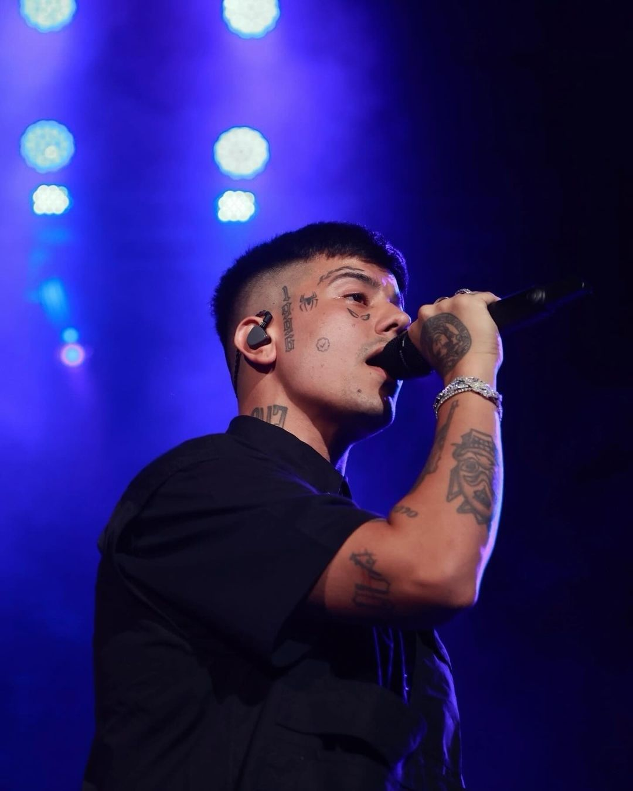

DUKI

BIO
Mauro Ezequiel Lombardo Quiroga (Almagro, Buenos Aires; 24 de junio de 1996), conocido artísticamente como Duki, es un rapero y compositor argentino.
Lombardo surgió de sus participaciones en las batallas de freestyle, en especial de la competencia El Quinto Escalón, la cual al volverse un fenómeno viral en YouTube, le dio su primera cuota de popularidad cuando se proclamó campeón en 2016. Su victoria le permitió lanzar su primer sencillo y trabajar con el productor discográfico Omar Varela meses después. En 2017, irrumpió en la escena musical argentina gracias a su primer sencillo que se posicionó en el top 10 de las listas de éxitos, «She Don't Give a FO», y al año siguiente formó parte del grupo "Modo Diablo" junto a los raperos YSY A y Neo Pistea, cuyos sencillos «Quavo» y «Trap N' Export» ayudaron a popularizar y formar un masivo culto de seguidores alrededor del género del trap en Sudamérica.
Tras romper su relación con Varela, en 2019 Lombardo lanzó su álbum de estudio debut, Súper sangre joven, de manera independiente, que fue certificado platino en Argentina, y que contuvo sus exitosos sencillos «Goteo» y «Hitboy». Fue seguido por su segundo álbum de estudio, Desde el fin del mundo (2021), el cual marcó su primer número 1 en álbumes digitales en Argentina, y que también fue certificado platino. Tras albergar cuatro fechas en el Estadio José Amalfitani durante 2022, convirtiéndose en el primer artista de su género en lograr un concierto en un estadio en su país, Lombardo lanzó su tercer álbum de estudio, Antes de Ameri, en 2023.
Fue nominado por su sencillo «Goteo» y su colaboración en el álbum YHLQMDLG del puertorriqueño Bad Bunny en la canción «Hablamos Mañana» para los Premios Grammy Latinos 2020. Fue el artista argentino más escuchado en el mundo en Spotify durante 2021, según la revista Rolling Stone.